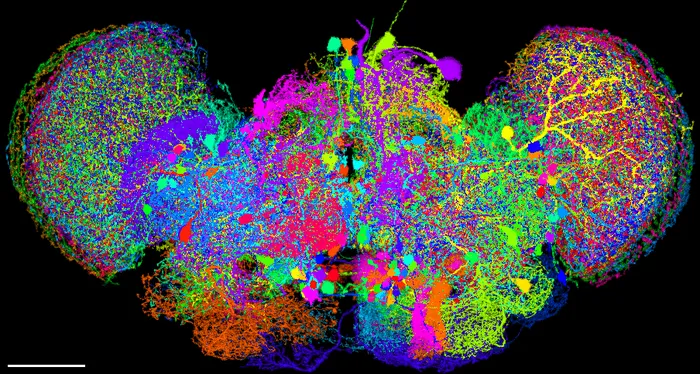
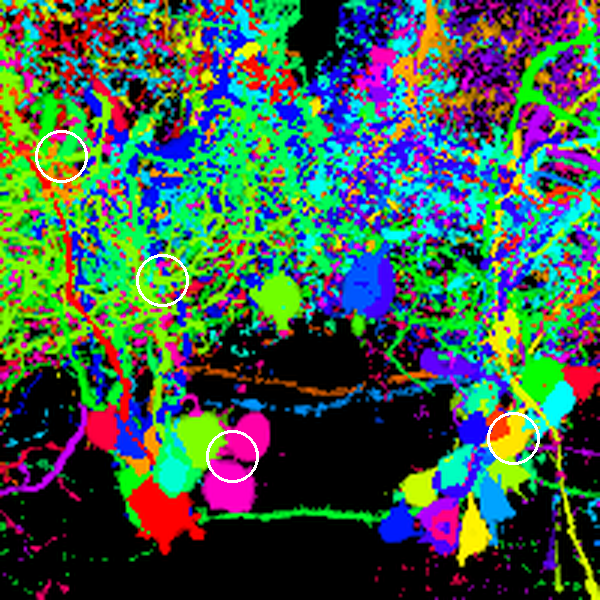
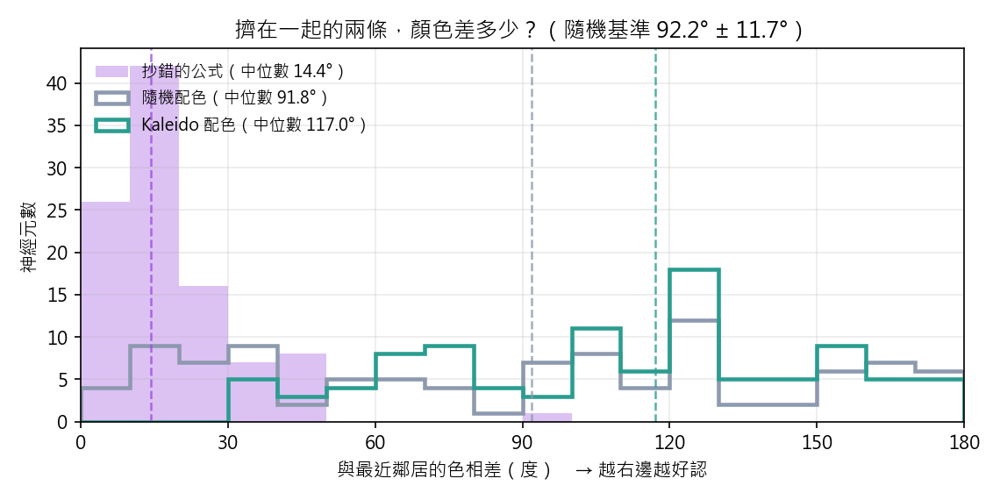
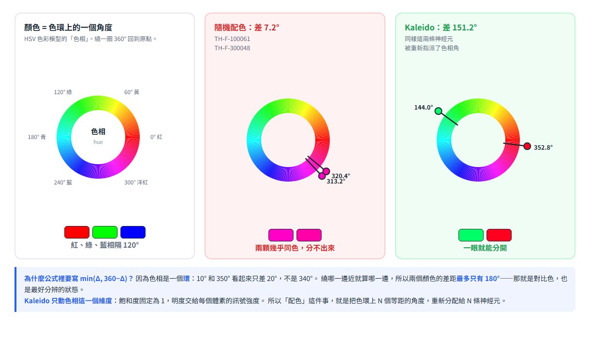
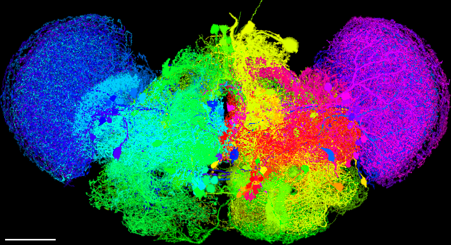
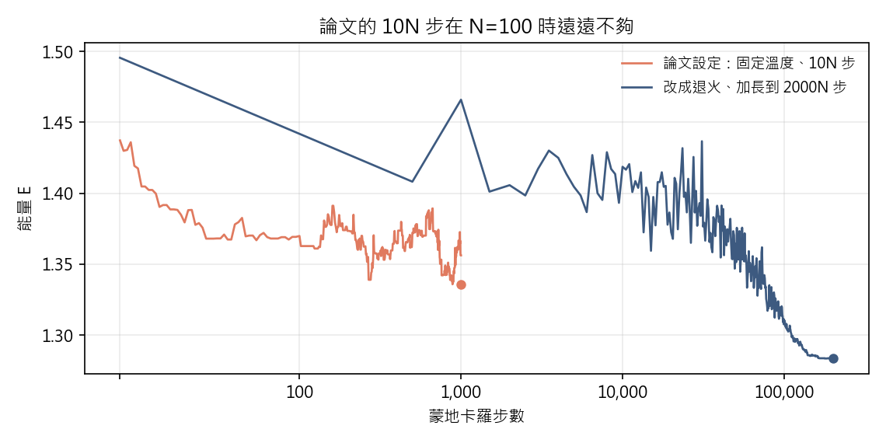

復刻 Kaleido：100 個果蠅神經元的自動配色
依 Wang et al., Neuroinformatics 16(2): 207–215 (2018) 重新實作， 跑在 FlyCircuit 的 100 個單神經元影像上
Kaleido 要解決的問題只有一句話：把上萬條神經元畫在同一張圖裡，還要讓人分得出誰是誰。 隨機上色遠看沒問題，但擠在一起的兩條總會不巧撞成同一個顏色。Kaleido 的辦法是把 「相鄰卻同色」定義成一種能量，再用蒙地卡羅把能量壓到最低。
（隨機配色 91.8°）
一、成果


色相環上的 100 個角度，被演算法重新分配給 100 條神經元：
二、跟隨機上色差在哪
論文 Fig. 2 的比較方式是：找一塊細胞本體擠在一起的地方，看隨機配色會不會把鄰居 塗成同色。這裡自動找出細胞本體最密集的薄片 （200×200×40 體素， 含 31 顆細胞本體）， 並把「隨機配色下靠得近又同色」的幾對用白圈標出來。


| 撞色的一對 | 相距（體素） | 隨機配色的色相差 | Kaleido 的色相差 |
|---|---|---|---|
| TH-F-000051 TH-F-100079 | 12.0 | 28.8° | 54.0° |
| TH-F-100061 TH-F-300048 | 20.6 | 7.2° | 151.2° |
| TH-F-100097 TH-F-100103 | 9.2 | 14.4° | 126.0° |
| TH-M-700001 VGlut-F-000232 | 27.1 | 28.8° | 172.8° |
把這件事量化到全部 100 條神經元上：每條神經元跟它空間上最近的鄰居之間的 色相差，越大越好認。

三、演算法
先講清楚：顏色為什麼是「角度」
這一頁從頭到尾都在講「色相差幾度」。Kaleido 用的是 HSV 色彩模型，把顏色拆成三個維度： 色相（顏色的種類，是一個 0°～360° 的環）、飽和度（固定為 1）、 明度（交給每個體素的訊號強度）。演算法只動色相這一個維度—— 所謂「配色」，就是把色環上 N 個等距的角度重新分配給 N 條神經元。

對 N 個神經元，色相角在色相環上均勻分布：\(\theta(i)=360^\circ\times i/N\)。 一組配色就是 1…N 的一個排列 \(\vec H\)，共有 \(N!\) 種。能量函數是
\(d_{ij}\) 是兩條神經元的空間距離（各隨機抽 100 個體素估算）， \(\Delta_{ij}\) 是色相差。兩者都在分母：靠得近又同色 → 分母小 → 這一項很貴。 把總能量壓低，就等於把擠在一起的神經元推到色相環的兩端。
復刻時踩到的第一個坑。我們自己的知識庫把這個公式抄成了 \(\frac{1}{d_{ij}}\times\min(\Delta_{ij},360^\circ-\Delta_{ij})\)， 分母的 min 項被搬到了分子。兩者意義完全相反：抄錯的版本在「相鄰又同色」時能量最低， 最小化它會把鄰居塗成同一種顏色。回頭比對原始 PDF 才發現分數線是涵蓋整個分母的。

蒙地卡羅：論文的步數不夠用
論文的動作定義是：找出目前能量最高的一對，隨機選兩個神經元跟它們交換色相，
以 \(P=\min(1,e^{-\beta\Delta E})\) 決定接受與否，步數設 10N。
在 N=100 時 10N 只有 1000 步——能量才降
7.1% 就結束了。改成降溫退火、加長到 2000N
（200,000 步，實際只花 9.2 秒）才壓得下去。

| 配色方式 | 最近鄰色相差中位數 | 能量降幅 |
|---|---|---|
| 隨機配色（200 次抽樣） | 92.2° ± 11.7° | — |
| 論文設定：固定溫度、10N 步（8 個種子） | 101.5° ± 10.2° | 9.5% |
| 退火、2000N 步（8 個種子） | 115.2° ± 3.5° | 13.8% |
| 用抄錯的公式（3 個種子） | 15.6° ± 1.7° | 30.7% |
踩到的第二個坑：只跑一次就下結論。隨機配色的中位數本身標準差就有 11.7°（200 次抽樣的範圍是 59.4°~118.8°）。 第一次比較時隨機那次剛好抽到 113°、最佳化那次是 88°，看起來「最佳化讓結果變差」—— 其實兩個都只是雜訊。跑 8 個種子才看得出來：最佳化不只把中位數推高， 還把變異從 ±11.7° 收斂到 ±3.5°。
其他配色模式
論文提供四種模式。上面用的是 color by distance；
color by file 可以依生物意義上色——這裡改成依 driver line
（標記的神經傳導物質）分組：

color by file 模式，
依 driver line 分組上色（8 組）。
這時顏色不再為了「好分辨」，而是為了「看出生物規律」。四、論文的第二個主張：檔案大小與神經元數量脫鉤
論文說，合併成單一 RGBA 影像後，大小「只由標準腦解析度決定」。 在 N = 10, 25, 50, 100 上實際量測（標準腦網格固定為 891×484×238，不隨 N 縮放）：
| N | 原始 .am（MB） | 各自展開成稠密體積（MB） | 合併後單一 RGBA（MB） | 載入（秒） | 距離矩陣（秒） | 蒙地卡羅 10N（秒） |
|---|---|---|---|---|---|---|
| 10 | 6.9 | 444.4 | 410.5 | 0.76 | 0.004 | 0.002 |
| 25 | 17.4 | 1,466.1 | 410.5 | 2.42 | 0.030 | 0.005 |
| 50 | 34.5 | 2,309.9 | 410.5 | 3.92 | 0.109 | 0.013 |
| 100 | 68.2 | 4,886.2 | 410.5 | 8.20 | 0.460 | 0.024 |

外推到 FlyCircuit 全腦約 130,000 個神經元：各自展開需要 6.44 TB（論文說的是「10 TB 等級」，同一個量級）， 合併後仍然是 410 MB。
一個沒有複現的細節。論文推導蒙地卡羅的時間複雜度是 \(O(N^2)\) （步數 10N × 每步更新 2(N−2) 對）。這裡實測到的是 \(N^{1.11}\)——因為 N 只到 100，每一步的固定開銷 （numpy 呼叫成本）還壓過 \(O(N)\) 的實質計算，漸近行為根本還沒開始。 要驗證 \(O(N^2)\) 得把 N 拉到上千。
五、復刻筆記：論文沒寫、必須自己補的決定
- 距離的不對稱性：論文的 \(d_{ij}\) 定義（「對 i 的每個抽樣體素找 j 最近的」） 從兩個方向算會得到不同的值，論文沒說用哪一邊。這裡取兩個方向的平均。
- \(\beta\) 取多少：論文只說是「對應人造溫度倒數的可調參數」。 這裡先跑 300 次試探測出典型的 \(|\Delta E|\)，再用它當尺度定 \(\beta\)， 換到別的資料上也還適用。
- 強度正規化：這批檔案的動態範圍不一致（有的最大值 255、有的 4095）， 論文只說「正規化後的訊號強度」。這裡用每個神經元自己的 99.5 百分位當白點。
- 增量更新：論文的複雜度分析假設一次換色只重算受影響的 2(N−2) 對。 照字面每步重算整個 N×N 矩陣會變成 \(O(N^3)\)，計時就失真了。